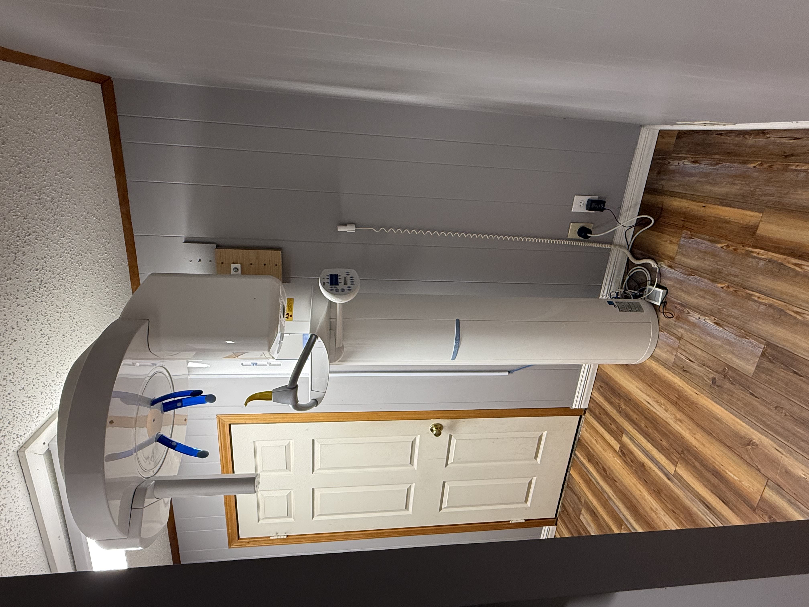
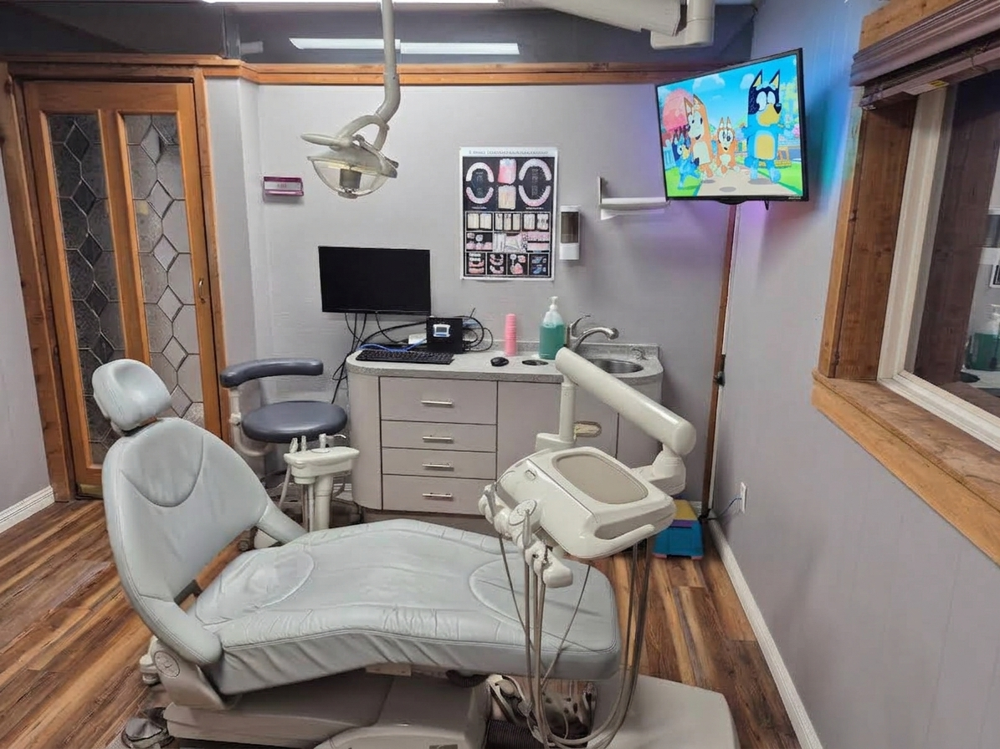

Comfort Digital X-Rays
"I hate taking dental X-rays. They are so uncomfortable!" We hear you!
At the office of Don B. Ruhnke, DDS, we are committed to making every step of your appointment as comfortable and easy as possible. That is why we utilize advanced digital imaging technology—including extra-oral X-ray capabilities.
With extra-oral imaging, panoramic and bitewing X-rays can be taken comfortably from outside the mouth. This eliminates bulky film inserts, making it ideal for patients with sensitive gag reflexes, small mouths, anatomical sensitivities, or for young children. The quick scan takes under 20 seconds using an open-face design for a stress-free experience. For detailed targeted views, we also offer gentle, fast-capturing intra-oral digital sensors.
Technology, Equipment & Comfort
Experience the difference at the office of Don B. Ruhnke, DDS! We combine modern dental technology with patient-focused amenities to make every visit as relaxed, comfortable, and effective as possible.

- Digital Comfort X-Rays & Sensors:State-of-the-art extra-oral and intra-oral imaging delivers fast, ultra-low radiation scans without uncomfortable film.
- Intraoral Cameras:High-definition photos give you a clear, real-time look inside your mouth to help guide your treatment decisions.
- In-Room Televisions for Children & Adults:Patients of all ages can sit back, relax, and stay entertained watching TV during their care.
- Advanced Autoclaves & Sterilization:Brand-new, hospital-grade equipment ensures strict safety and health standards for every visit.
Safety & Security
At the practice of Don B. Ruhnke, DDS, our facility is engineered to surpass state and federal standards for safety, cleanliness, and organization. Through modern autoclave technology, every dental instrument is individually wrapped and sterilized, while non-sterilizable items are replaced with single-use disposables. Furthermore, as a 100% digital office, your personal health records are kept completely secure through encrypted, regularly archived digital storage.